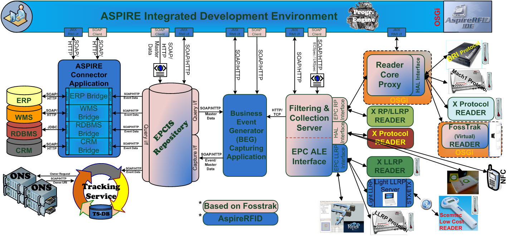
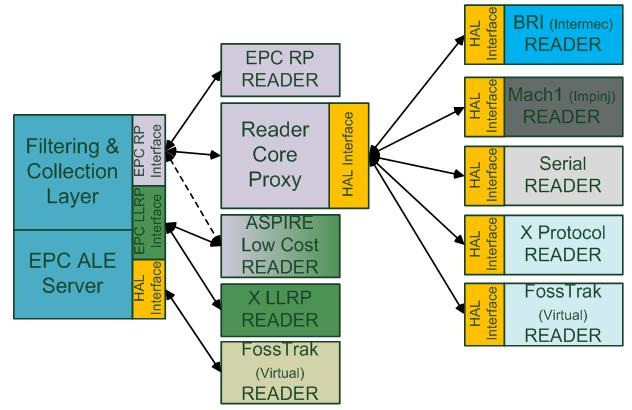
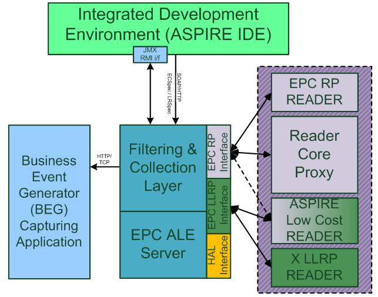
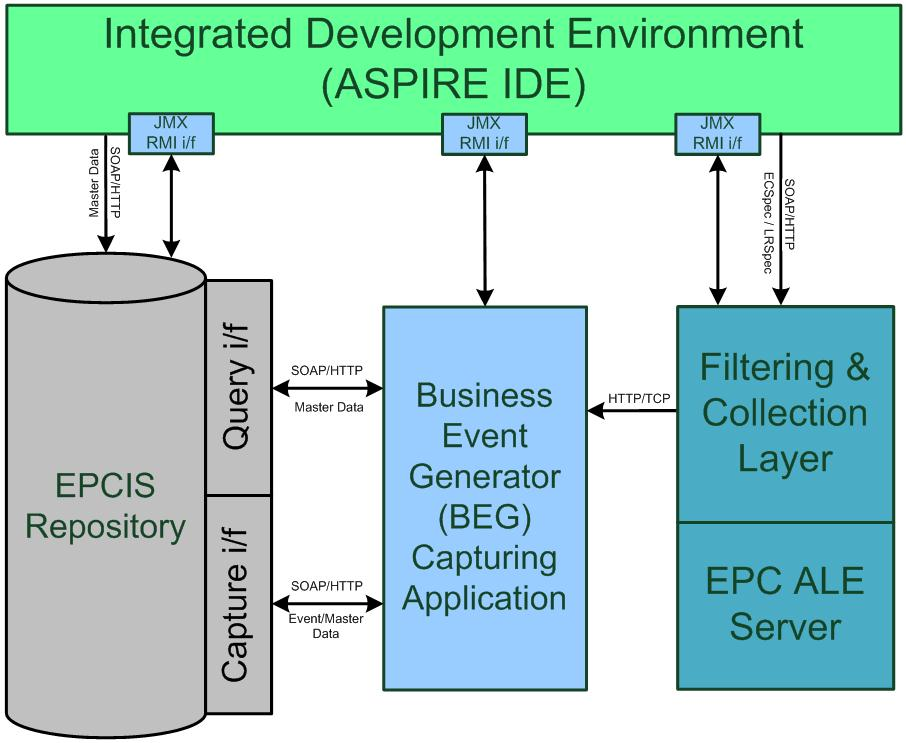
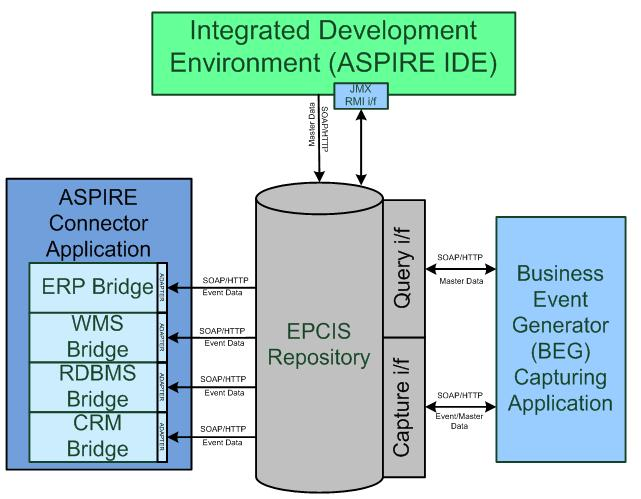
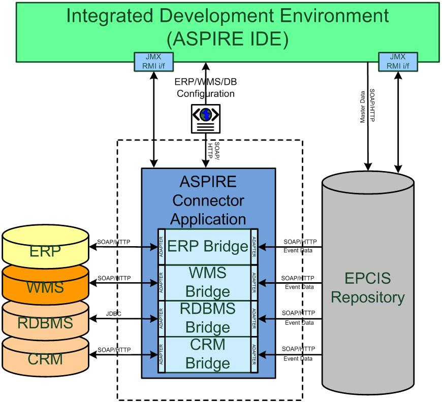
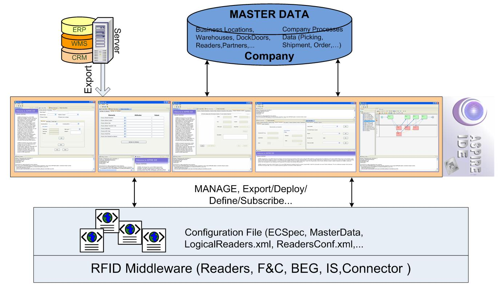

AspireRFID Architecture

Hardware Abstraction Layer (HAL)
The role of this layer is to unify the way the ASPIRE middleware interacts with the RFID readers from multiple vendors that support varying protocols. This is based on the introduction of a hardware abstraction layer (HAL) and the provision of a fixed instruction set to upstream middleware layers which consume RFID readings from the hardware.
Specifications that satisfy the need for a norm at this level are the EPCglobal Reader Protocol (RP), the EPCglobal Lower Level Reader Protocol (LLRP). These protocols define the standard bindings through witch an application can send messages in a standardized format.
The methods of communication between the HAL and the hardware itself vary, depending on the hardware vendor and it may require a serial connection, an Ethernet connection, etc. The protocols of communication may also vary from a raw TCP (Transmission Control Protocol) connection, to SSL (Secure Sockets Layer) and HTTP (Hypertext Transfer Transport Protocol). The same will apply for the command and message encodings, which may be text, XML or binary.
The Hardware Abstraction shown in the Figure Below defines the interface between the HAL, the F&C server, the Reader Core or any other application using the HAL. It standardises access to various readers and simulators of readers. This allows uniform usage. The readers and simulators become interchangeable because the code specific to the reader is part of the HAL and not of the application. The implementations of the Hardware Abstraction interface are divided into multiple modules, one for the simulators and one for each reader manufacturer. A module can contain one or multiple reader controllers.

Reader Core Proxy (RCP)
In order to transform non EPC Reader Protocol readers into compliant readers we are using a Reader Core Proxy application, which is used (as shown in the Figure above) as a mediator between a reader supporting protocol “X” and the corresponding F&C Reader Protocol Interface. By deploying the appropriate HAL module at the Reader Core we make whatever reader compliant to RP. Every reader with an implementation of the Hardware Abstraction interface can be controlled over the Reader Protocol.
The core reader support TCP and HTTP for transporting reader protocol messages, while the message content can be either XML or Text. In addition, it support synchronous and asynchronous messaging (through the reader’s protocol Notification Channels mechanisms). Furthermore, support for other reader protocol characteristics, such as triggers, data selectors must be provided.
Filtering & Collection Server (ALE)

In the scope of large scale deployments, RFID systems generate an enormous number of object reads. Many of those reads represent non-actionable “noise.” To balance the cost and performance of this with the need for clear accountability and interoperability of the various parts, the design of the ASPIRE middleware seeks to:
- Drive as much filtering and counting of reads as low in the architecture as possible.
- Minimize the amount of “business logic” embedded in the Tags.
The Filtering and Collection Middleware is intended to facilitate these objectives by providing a flexible interface (ALE (Application Level Events) interface) to a standard set of accumulation, filtering, and counting operations that produce “reports” in response to client “requests.” The client will be responsible for interpreting and acting on the meaning of the report. Depending on the target deployment the client of the ALE interface may be a traditional “enterprise application,” or it may be new software designed expressly to carry out an RFID-enabled business process which operates at a higher level than the “middleware” that implements the ALE interface. In the scope of the ASPIRE project, the Business Event Generation (BEG) middleware (described later) would naturally, consume the results of ALE filtering. However, there might be deployment scenarios where clients will interface directly to the ALE filtered streams of RFID data.
Once the readers capture relevant tag data they notify the middleware which combines the data arriving from different readers in a report that is sent according to a pre-determined schedule to the subscribed applications. Since the middleware receives data from multiple readers, it provides specific filtering functionality depending on the different already defined specifications. So redundant events from different readers observing the same location are not included to the despatched report accomplishing the reduction of filtering and aggregation required to the registered application interpreting the captured RFID data.
Business Event Generator (BEG)

The architecture introduces a Business Event Generator (BEG) module between the F&C and Information Sharing (e.g., EPC-IS) modules. The role of the BEG is to automate the mapping between reports stemming from F&C and IS events. Instead of requiring developers to implement the mapping logic, the BEG enables application builders to configure the mapping based on the semantics of the RFID application.
With the help of AspireRfid IDE by describing the company’s business processes and its underlying business infrastructure the required business events that constitutes a company’s business functionality are created and stored at the RFID repository that Business Event Generator engine exploits to define its functionality. In EPC terms, BEG can be seen as a specific instance of an EPC-IS capturing application, which parses EPC-ALE reports, fuses these reports with business context data using the assigned business event from the company’s business metadata to serve as guide and accordingly prepares EPC-IS compliant events. The latter events are submitted to the EPC-IS Repository, based on an EPC-IS capture interface and related bindings (e.g., HyperText Transfer Protocol (HTTP)/ Java Messaging Service (JMS). The specification of the BEG is a valuable addition over existing RFID middleware architectures and platforms.
Information Sharing Repository (EPCIS)

At the heart of the architecture is the EPC-IS repository. The ASPIRE Information Sharing repository is responsible for receiving application-agnostic RFID data from the filtering & collection middleware through the Business Event Generation (BEG) application and store the translated RFID data in corresponding business events. These events carry the business context as well (e.g., they refer to particular companies, business locations, business processes etc.). Moreover it makes business events and master data available and accessible to other upstream applications thru the query interface.
Generally, the ASPIRE information sharing repository is dealing with two kinds of data:
- RFID event data i.e. data arising in the course of carrying out business processes. These data change very frequently, at the time scales where business processes are carried out.
- Master/company data, i.e. additional data that provide the necessary context for interpreting the event data. These are data associated with the company, its business locations, its read points, as well as with the business steps comprising the business processes that this company carries out.
At a glance Information Services of the ASPIRE Information Sharing middleware itself consists of three parts a capture interface that provides web services for storing data, a repository that provides persistence and query interface that provides web services that retrieves the business events/master data from the repository.

RFID middleware components described in the previous paragraphs provide a foundation for translating raw RFID streams to meaningful business events comprising business context such as where a tag was seen, at what time and in the scope of which process. Enterprises can then leverage these business events through their legacy IT systems (e.g., ERPs, WMS, corporate databases), which are used to support their business processes. To this end, there is a clear need for interfacing these legacy systems, with the information sharing repositories, established and populated as part of the RFID deployment. Interfacing between IT systems and the information sharing repository, as well as other middleware blocks of the RFID deployment is realized through specialized middleware components that are called “connectors”.
The main purpose of connector components are to abstract the interface between the ASPIRE information sharing repository and enterprise information systems. Hence, connectors offer APIs, that enable proprietary enterprise information systems to exchange business information with the ASPIRE RFID middleware system.
Connector therefore provides:
- Support for services and events: Composite applications can call out to existing functionality as a set of services, and to be notified when a particular event type (for example, “purchase order inserted,” “employee hired”) occurs within an existing application.
- Service abstraction: All services have some common properties, including error handling, syntax, and calling mechanisms. They also have common access mechanisms such as JCA (Java Connector Architecture), JDBC, ODBC (Object Database Connectivity), and Web services, ideally spanning different platforms. This makes the services more reusable, while also allowing them to share communications, load balancing, and other non-service-specific capabilities.
- Functionality abstraction: Individual services are driven by metadata about the transactions that the business needs to execute.
- Process management: Services embed processes, and process management tools call services. Hence, connectors support the grouping of several service invocations to processes.
Management
The architecture specifies also implementation of end-to-end (e2e) management functionality based on JMX (Java Management Extension) technology. To this end, a JMX wrapper is specified for each middleware and hardware component. JMX wrappers interface to underlying readers based on the Simple Network Management Protocol (SNMP) and the Reader Management (RM) protocol, while they interface to middleware components (e.g., ALE, BEG, Connector) using MBeans that access their low-level control properties. Based on these JMX wrappers composite sophisticated management applications can be implemented. Management applications can be used to interface and control actuators as well. Based on JMX, actuator control commands can be issued upon the occurrence of certain events at any middleware layer.
Actuators
The actuator control framework will define certain interfaces and connectors that third party applications will be able to utilize in order to successfully interact with analogue or digital devices, based on sensor events. These sensors may either be RFID or other ASPIRE supported physical sensors. Using this framework the application will be able to register an event handler that will, for example, interact with a flashlight when a specific group of tags pass through a RFID aggregation gate.
Integrated Development Environment (AspireRfidIDE)

As far as ease of development and deployment is concerned, the architecture specifies the existence of an IDE enabling the visual management of all configuration files and meta-data that are required for the operation of an RFID solution. These include:
- The Physical Reader Configuration Editor to configure physical readers and their operational parameters and environments.
- The Logical Reader Configuration Editor which will support the definition of logical readers (LLRP, RP, HAL and Simulator readers).
- The Reading Specifications Editor which will enable editing, as well as management of F&C server Filtering Specifications.
- The F&C Commands Execution which will have as an objective to provide a control client to execute Application Level Event specification (ALE) commands on a reader or component that implements the ALE specification.
- The Connector Configurator which will be able to interact with the Connector application to reveal all its functionalities and configurations. It should enable configuration of connectors to different systems and databases.
- The Master Data Editor (with support for Elementary Business Process Description) which will enable users and/or consultants to edit enterprise data including information about the company’s location, its business locations, readpoints, as well as its business processes.
- And the Business Prosess Workflow Management Editor which can offer to business users and RFID consultants a graphical user interface for manipulating complex business processes, that are composed as workflows of elementary business processes. The workflow management tool will leverage (though. using/ invoking) the functionality of the above tools in order to support RFID deployments in accordance to particular business processes.
 PDF
PDF History
History


{kind=link}
{kind=link}
{kind=link}
{kind=link}
{kind=link}
{kind=link}
{kind=link}
{kind=link}
{kind=link}
{kind=link}